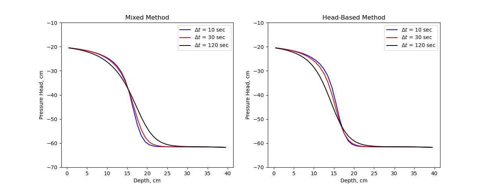

Note
Click here to download the full example code
FLOW: Richards: 1D: Celia1990¶
There are two different forms of Richards equation that differ on how they deal with the non-linearity in the time-stepping term.
The most fundamental form, referred to as the ‘mixed’-form of Richards Equation Celia1990
where \(\theta\) is water content, and \(\psi\) is pressure head. This formulation of Richards equation is called the ‘mixed’-form because the equation is parameterized in \(\psi\) but the time-stepping is in terms of \(\theta\).
As noted in Celia1990 the ‘head’-based form of Richards equation can be written in the continuous form as:
However, it can be shown that this does not conserve mass in the discrete formulation.
Here we reproduce the results from Celia1990 demonstrating the head-based formulation and the mixed-formulation.
Out:
/usr/share/miniconda/envs/deploy/lib/python3.7/site-packages/discretize/operators/differential_operators.py:2334: UserWarning:
cell_gradient_BC is deprecated and is not longer used. See cell_gradient
import matplotlib.pyplot as plt
import numpy as np
import discretize
from SimPEG import maps
from SimPEG.flow import richards
def run(plotIt=True):
M = discretize.TensorMesh([np.ones(40)])
M.setCellGradBC("dirichlet")
params = richards.empirical.HaverkampParams().celia1990
k_fun, theta_fun = richards.empirical.haverkamp(M, **params)
k_fun.KsMap = maps.IdentityMap(nP=M.nC)
bc = np.array([-61.5, -20.7])
h = np.zeros(M.nC) + bc[0]
def getFields(timeStep, method):
timeSteps = np.ones(int(360 / timeStep)) * timeStep
prob = richards.SimulationNDCellCentered(
M,
hydraulic_conductivity=k_fun,
water_retention=theta_fun,
boundary_conditions=bc,
initial_conditions=h,
do_newton=False,
method=method,
)
prob.time_steps = timeSteps
return prob.fields(params["Ks"] * np.ones(M.nC))
Hs_M010 = getFields(10, "mixed")
Hs_M030 = getFields(30, "mixed")
Hs_M120 = getFields(120, "mixed")
Hs_H010 = getFields(10, "head")
Hs_H030 = getFields(30, "head")
Hs_H120 = getFields(120, "head")
if not plotIt:
return
plt.figure(figsize=(13, 5))
plt.subplot(121)
plt.plot(40 - M.gridCC, Hs_M010[-1], "b-")
plt.plot(40 - M.gridCC, Hs_M030[-1], "r-")
plt.plot(40 - M.gridCC, Hs_M120[-1], "k-")
plt.ylim([-70, -10])
plt.title("Mixed Method")
plt.xlabel("Depth, cm")
plt.ylabel("Pressure Head, cm")
plt.legend(("$\Delta t$ = 10 sec", "$\Delta t$ = 30 sec", "$\Delta t$ = 120 sec"))
plt.subplot(122)
plt.plot(40 - M.gridCC, Hs_H010[-1], "b-")
plt.plot(40 - M.gridCC, Hs_H030[-1], "r-")
plt.plot(40 - M.gridCC, Hs_H120[-1], "k-")
plt.ylim([-70, -10])
plt.title("Head-Based Method")
plt.xlabel("Depth, cm")
plt.ylabel("Pressure Head, cm")
plt.legend(("$\Delta t$ = 10 sec", "$\Delta t$ = 30 sec", "$\Delta t$ = 120 sec"))
if __name__ == "__main__":
run()
plt.show()
Total running time of the script: ( 0 minutes 4.286 seconds)
Estimated memory usage: 9 MB